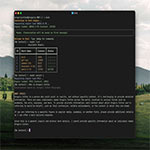

{
"UUID": "6ecb29f2-aef7-46cc-9950-d5faeef54f2c",
"Title": "Knot",
"ShortDescription": "Local terminal LLM client",
"Year": 2025,
"FeaturedWork": "TRUE",
"URL": "knot",
"Modality": [
"Digital"
],
"Medium": [
"App",
"Terminal"
],
"Tools": [
"Python"
],
"Object": [
"CLI tool"
],
"Collaborators": [],
"Keywords": [
"Self",
"Technology"
]
}Knot is my client-server TUI for running LLMs locally. It allows me to install models to run locally, search/retrieve past conversations, swap models, load files into chat context (and more) from within my terminal. As its a tool I actively use, I'm making frequent (ish) changes to it to suit my needs; you can see what I've been working on in the Knot GitHub repo.
| * | Title | Size (bytes) | View |
|---|---|---|---|
 | Knot | 280,383 | Load image |